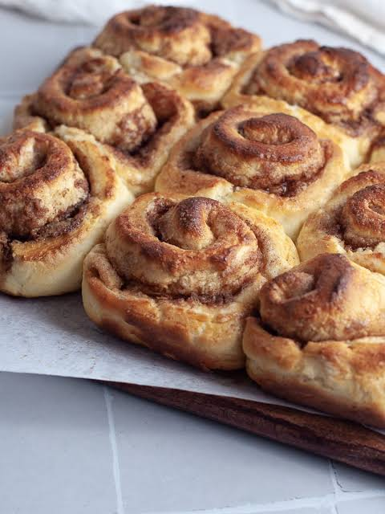

Cinnamon Roll

Description
These soft and fluffy cinnamon rolls are a simple homemade treat with a sweet cinnamon filling and a light vanilla glaze. They're perfect for breakfast, brunch, or dessert and can be made with just a few basic ingredients.
Even if you're new to baking, this recipe is easy to follow and produces warm, delicious cinnamon rolls that are best served fresh from the oven.
Ingredients
- 2 cups all-purpose flour
- 2 tsp baking powder
- 2 tbsp melted butter
- 2 tbsp brown sugar
- 1 tbsp ground cinnamon
- 1/2 cup milk
Steps
- Preheat the oven to 375°F (190°C) and lightly grease a baking dish.
- Mix the flour, baking powder, milk, and melted butter to form a soft dough.
- Roll out the dough, sprinkle it evenly with the brown sugar and cinnamon, then roll it into a log.
Slice the log into rolls and place them in the prepared baking dish.
- Bake for 20–25 minutes, or until the rolls are golden brown.
- Let the rolls cool slightly before serving.
Home